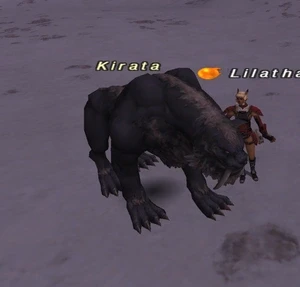

Level 75 reference · Zenith rules
|
Job: Warrior Notorious Monster |
 |

|
Zone |
Level |
Drops |
Steal |
Spawns |
Notes |
|
41 |
1 |
A, L | |||
|
HP = Detects Low HP; M = Detects Magic; Sc = Follows by Scent; T(S) = True-sight; T(H) = True-hearing JA = Detects job abilities; WS = Detects weaponskills; Z(D) = Asleep in Daytime; Z(N) = Asleep at Nighttime | |||||
Notes:
- Spawns around the tower at H-10; Lottery Spawn from the two Tundra Tiger and two Living Statue in that area.
- It starts a chance of lottery spawn again approximately 1-4 hours after the NM is killed.
- Around 3724~3820HP
- Killable by: Solo at level 60
- Special Attacks: Additional Effect: Wind Damage on every hit
Adapted from Eden Wiki: Kirata · Contributors and history · CC BY-SA 4.0. Revision 44655. Layout, links and optional background text adapted for Zenith.